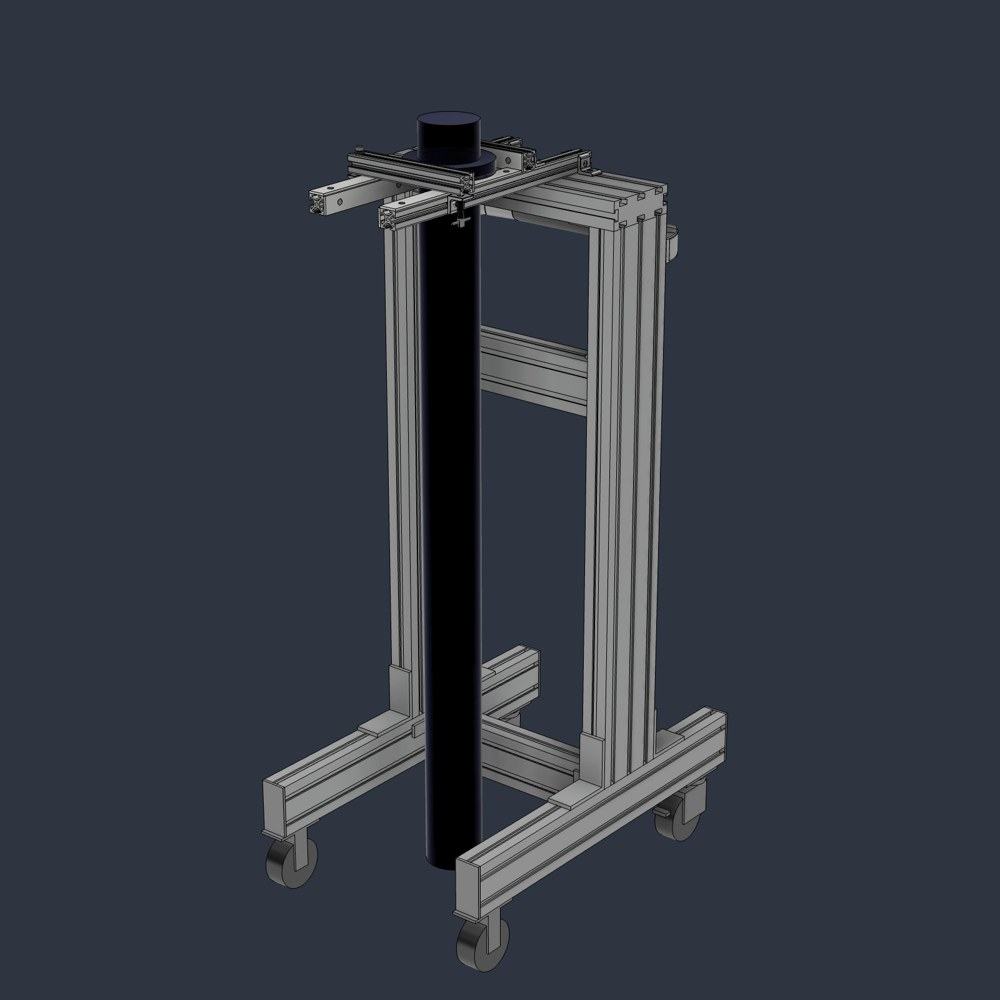

Research연구
Undergraduate Researcher, Mazur Lab (Prof. Greg Mazur)
Materials Department, UC Santa Barbara, May 2026 to present
The lab
Prof. Mazur’s group is a new condensed-matter lab at UCSB that works on superconductor and semiconductor quantum devices in germanium (Ge/SiGe) heterostructures. I joined in May 2026. Most of my work so far has been the practical side of getting a sample from a wafer to a measurement at low temperature: cleanroom processing, wiring and cooling the dilution refrigerator, and designing the hardware in between.
Current project
My own project is a thin-film study: testing whether amorphous vanadium silicide superconducts. It is just starting, and the first step is fabricating the films and devices.
Fabrication
I process samples at the UCSB Nanofab and wire bond them for low-temperature measurement. I have done each step of the photolithography process: cleaning, cleaving, deposition, resist coating, exposure, development, wet etching (HF, HCl and BOE) and resist strip. I am authorized on the field-emission SEM, atomic layer deposition, e-beam evaporation, the maskless aligner and rapid thermal processing.
Low-temperature measurement
I assist with lock-in magnetotransport measurements of Ge/SiGe Hall bars in the dilution refrigerator. The experiments follow IBM’s study of interface traps in Ge/SiGe (Massai et al., Communications Materials, 2024), and I am learning to extract carrier density and mobility from Hall and gate-sweep data. On the fridge I wire the lock-in amplifiers and Fischer cables, run cooldowns, and fill the cold traps every week.
A ground loop
The lab’s dilution refrigerators had a heating problem. I traced it to a ground loop between the fridge and the instrument chassis and solved it.
Cryogenic hardware
I design sample hardware in Autodesk Fusion and make it in the machine shop (manual mill, lathe, drill, bandsaw and chop saw) or on a 3D printer.
- Copper cold fingers that hold a sample board inside the fridge’s bottom-loading puck.
- Sample-puck holders and cases.
- A T-slot aluminum trolley that holds the fridge’s bottom loader. The layout is adapted from a commercial probe trolley. I made the model, the drawings and the bill of materials, and the parts are being machined now.

Other lab work
- Surveyed the lab’s RF environment from 600 MHz to 6 GHz to identify the emission frequencies of the nearby airport radar.
- Set up the lab’s NAS server for automatic fridge-data uploads and remote measurements.
- Gave group-meeting talks on quantum wells and on Schottky barriers at superconductor and germanium contacts.
Coursework
Quantum Mechanics, Electromagnetism, Intermediate and Advanced Mechanics, Methods of Theoretical Physics and Scientific Computing (Python). In Fall 2026: Condensed Matter Physics, Statistical Mechanics, and an independent study with Prof. Mazur.